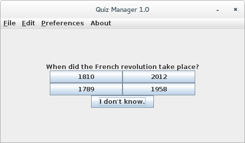
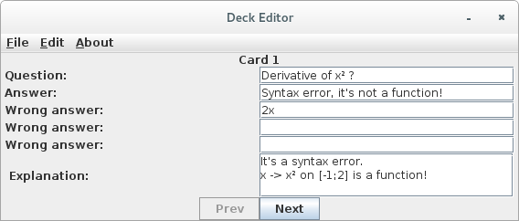

Simple Multiple Choice Quizzes for Everyone
Quiz Manager is a simple tool that allow for the easy creation of multiple choice quizzes.
You can use the Quiz Player to take an infinite number of quizzes.
The learning mode will help you learn the answers by presenting the questions you strugle with more often. The test mode however, will only let you go through the questions once and will give you you're final score! Did you do better than your friends?
The built-in Quiz Editor will let you create your own quizzes. It is very easy to use thanks to its graphical user interface! You can then share your home-made quizzes, challenge your friends or even (who knows) help them revising for ther exams!
You find a link to download the software in theDownload section.
You will find the user manual on this page.
This should provide a nice overview of the software you're about to download! So if you want to get an idea of what Quiz Manager is, you should definitly head there! I hope it is as clear as it can be. If you feel something is not right with it or if you don't understand something, do not hesitate to contact me!
If you downloaded the QuizManager application, you will also find a link to this same page in the 'about' menu.
Quiz Manager is programmed in Java, which means you will need a Java Runtime Environment (JRE for short) installed on your computer for it to work. You will find the appropriate JRE depending on your machine here. If you are a Java developper, you should already have a JDK installed (Java Development Kit) so you don't need to worry at all!
QuizManagerv1.0 executable JAva Archive (jar), ~210KB.
QuizManagerv1.0 + example deck Zip archive containing QuizManagerv1.0.jar and example.dk (as an exemple of what a deck looks like) ~ 200KB